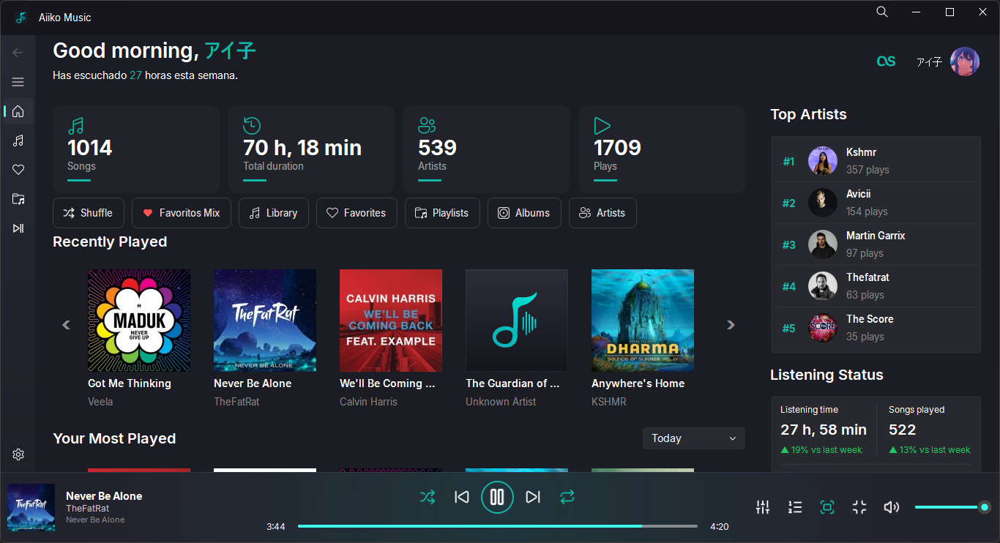
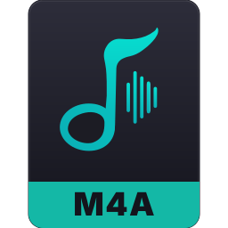

A music player for your personal library.
Aiiko Music is a local music player for Windows, designed for personal music collections. It brings together playback, albums, artists, playlists, lyrics, and metadata into one cohesive experience.

Features
Library
- Local music library
- Album and artist browsing
- Playlist management
- Full-library search
Playback
- 10-band equalizer
- Queue and shuffle playback
- Gapless playback
- Audio visualizer
Lyrics & metadata
- Synchronized lyrics (.lrc & online search)
- Built-in lyrics editor
- Tag and metadata editor
- Album art support
Interface
- Floating mini player
- Fullscreen display mode
- Theme and accent color customization
- Keyboard shortcuts
Integrations
- Discord Rich Presence
- Last.fm scrobbling
Screenshots

Supported formats
Aiiko Music plays the most common audio formats, including:

Format support depends on the underlying audio engine capabilities.
Installation
For Windows 10 and 11. Download the latest release package to get started.
Download Latest Release
Windows 10/11 (64-bit) · Portable ZIP
All Releases
GitHub Releases & Changelog
- Download the ZIP package using the button above.
- Extract the files to your preferred folder.
- Launch
Aiiko Music.exeand follow the initial setup prompts.
If you prefer running or building from source code, instructions are available in the README.